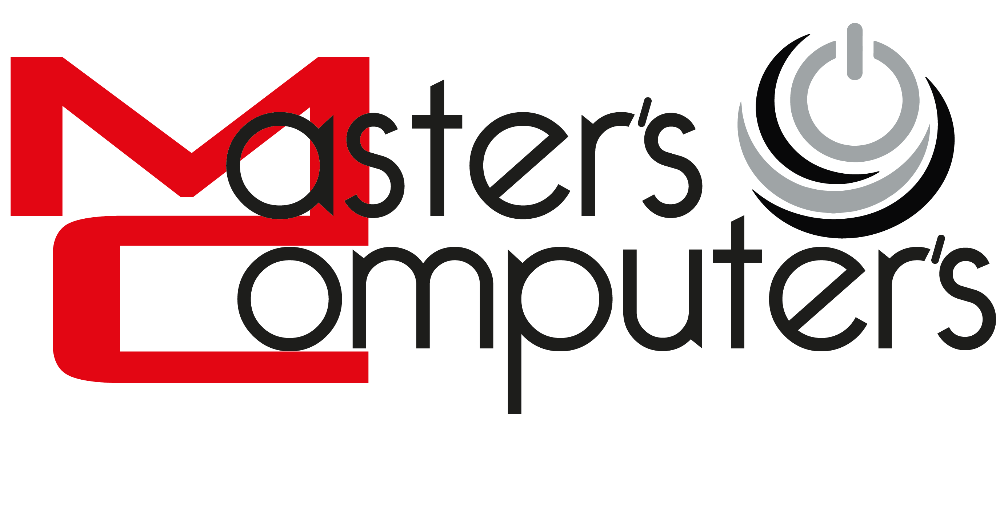
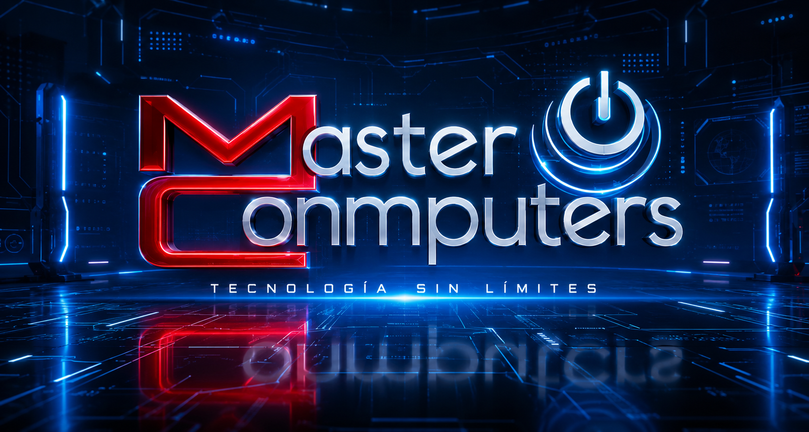

|
 |
Sobre NosotrosInnovando en tecnología desde 2009 |
|
 |
En Master Computers, llevamos más de una década ofreciendo soluciones tecnológicas confiables e innovadoras para hogares, empresas e instituciones. Desde nuestra fundación en 2009, nos hemos comprometido a brindar productos de calidad, asesoría especializada y un servicio técnico que inspire confianza. Nuestra experiencia nos ha permitido crecer junto a nuestros clientes, adaptándonos constantemente a los avances tecnológicos para ofrecer equipos de cómputo, accesorios, redes, mantenimiento, soporte técnico y soluciones informáticas que respondan a las necesidades actuales. Creemos que la tecnología debe ser una herramienta para impulsar el crecimiento y la productividad. Por ello, nuestro equipo trabaja con profesionalismo, responsabilidad y pasión, asegurando que cada cliente reciba la mejor atención y las soluciones más adecuadas para sus proyectos. Hoy, Master Computers continúa evolucionando con el mismo compromiso que nos ha distinguido desde el primer día: ofrecer tecnología de calidad, servicio excepcional y soluciones que marquen la diferencia. |
Brindar soluciones tecnológicas innovadoras y confiables que contribuyan al crecimiento y éxito de nuestros clientes, ofreciendo productos de calidad, soporte técnico especializado y un servicio personalizado.
Ser una empresa líder en soluciones tecnológicas, reconocida por la excelencia de nuestro servicio, la innovación constante y la confianza que depositan nuestros clientes en nosotros.